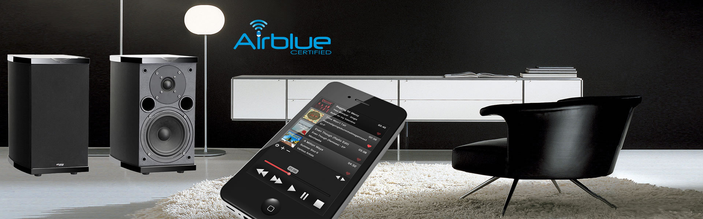
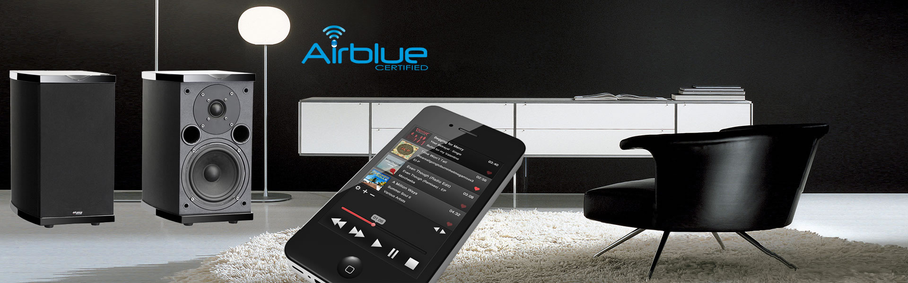

Advance Acoustic : chaînes Haute Fidélité

Advance Acoustic s'engage à apprivoiser vos oreilles car, le plaisir d'écouter du Bon Son passe surtout par un Bon Matériel.
Pour répondre à l'attente des mélomanes les plus exigeants qui portent une attention particulière au résultat final de leur système audio et qui consacrent une part importante de leurs loisirs à l'écoute de la musique, nous avons créé des amplificateur, pré-amplificateurs, lecteurs CD et lecteur multimédia, et un ensemble Haute Fidélité « all in one » dont les capacités musicales raviront les plus exigeants.